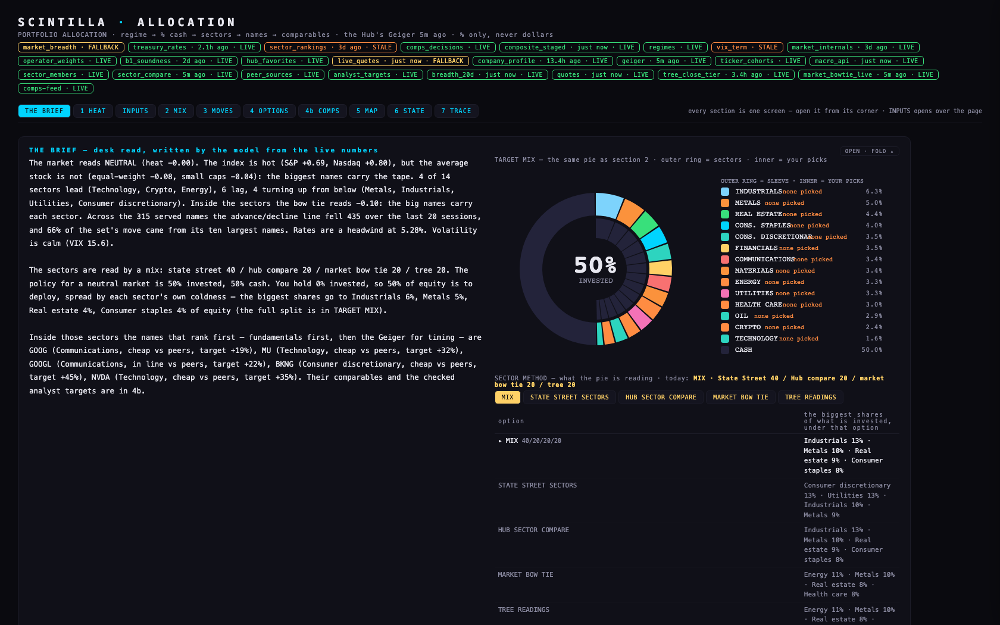
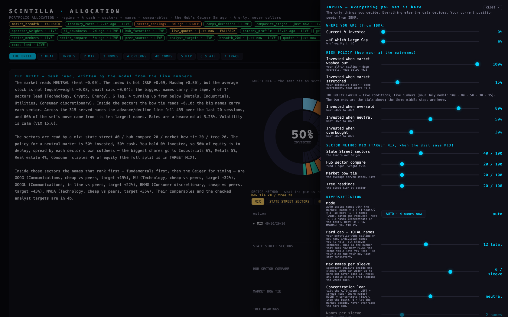
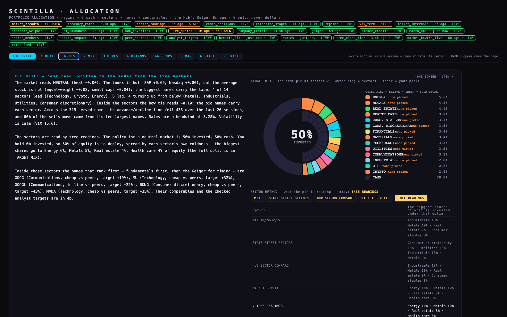
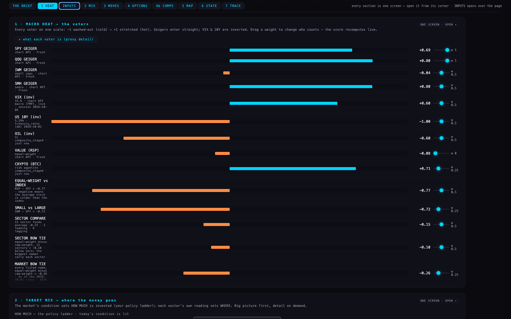
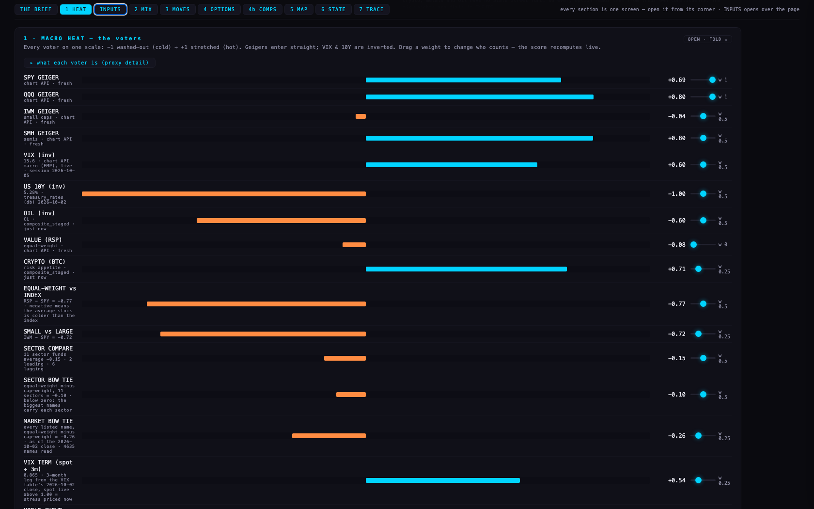
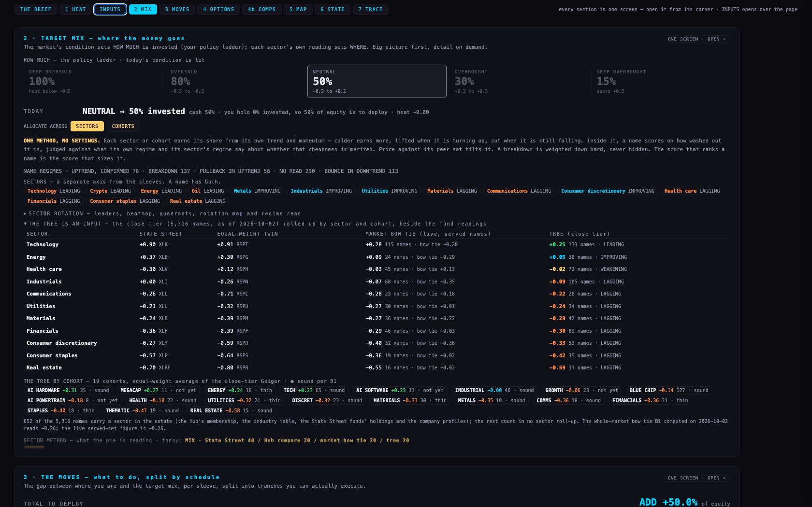
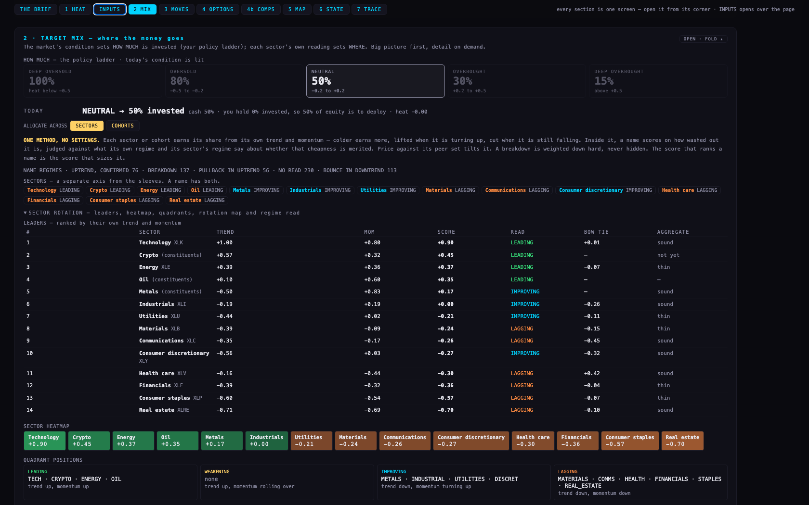
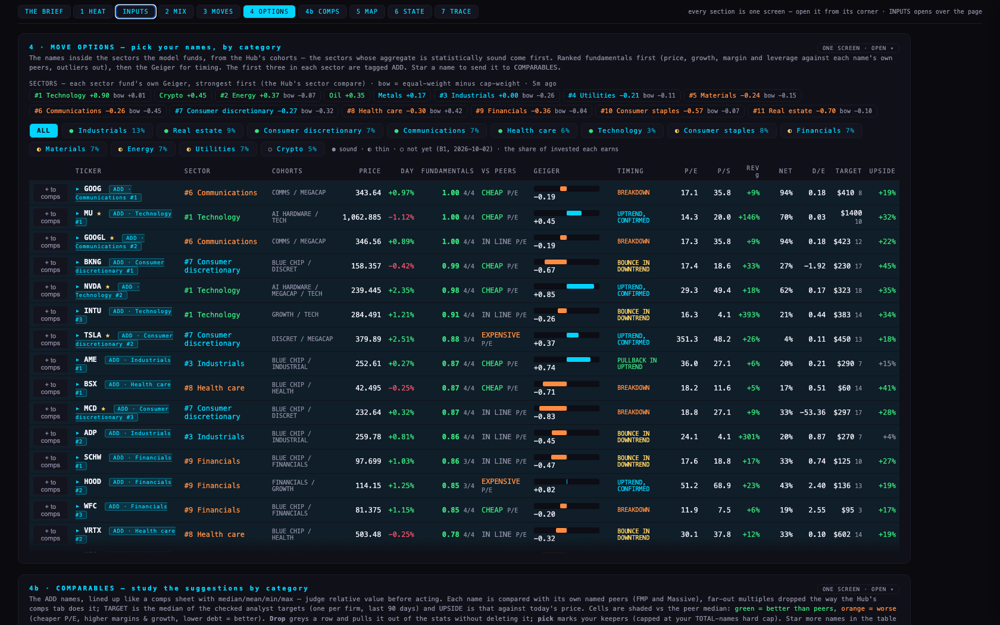
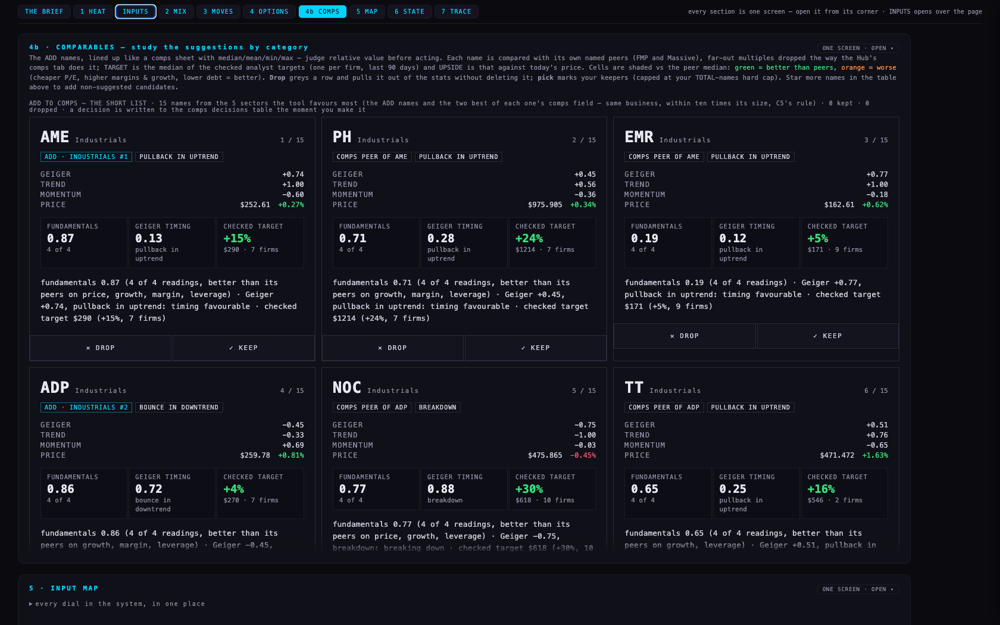

PA4 · Portfolio allocation — Alan's 14:15 additions, in his tool5 Oct 2026, evening · allocation repo branch pa4-20261005 on top of PA3 (main) · not deployed · the live page at allocation.scintillahub.ai is PA3 until the coordinator fast-forwards main
Same tool, same sections, same dials. Added what Alan asked for at 14:15: the advance/decline line and concentration as voters, the sector methodology as a dial on TARGET MIX, the comps short list in the approved cards with KEEP / DROP saved, the tree as an input, a list of what goes on the Hub, and the fold — one screen per section with a bar at the top, so there is no more scrolling like crazy.
The pictures
The first screen at 1680 × 1050: THE BRIEF on the left, the TARGET MIX pie and the sector-method dial on the right, the section bar under the badges.



The cards: ADD TO COMPS as a short list, in the approved swipe card. One line of reason each — fundamentals rank · Geiger timing · checked target. KEEP / DROP is written to the comps decisions table the moment it is pressed.






Every section folded and open, at 1680 × 1050 and 1920 × 1080, is in shots/ (first-screen, dial-drawer, dial-on-tree, the-cards, and 00 to 08 for each section, -folded and -open). The readout file beside them holds the brief, the dial and every voter as text at both sizes.
What it says today (5 Oct, about 15:50 ET)
The voters — name · where it comes from · default weight · today's vote
The four rows in blue are new or rewired today. A weight of 0 means the voter is shown and silent. The vote runs −1 (washed out, cold) to +1 (stretched, hot).
| voter | source | default weight | today | what the dial says |
|---|---|---|---|---|
| SPY GEIGER | the chart API's Geiger (the Hub's own) | 1 | +0.69 | chart API · fresh |
| QQQ GEIGER | the chart API's Geiger | 1 | +0.80 | chart API · fresh |
| IWM GEIGER | the chart API's Geiger | 0.5 | -0.04 | small caps · chart API · fresh |
| SMH GEIGER | the chart API's Geiger | 0.5 | +0.80 | semis · chart API · fresh |
| VIX (inv) | the chart API's macro board (FMP), live — new today | 0.5 | +0.60 | 15.6 · chart API macro (FMP), live · session 2026-10-05 |
| US 10Y (inv) | the treasury table | 0.5 | -1.00 | 5.28% · treasury_rates (db) 2026-10-02 |
| OIL (inv) | the database Geiger (oil has no chart API symbol) | 0.5 | -0.60 | CL · composite_staged · just now |
| VALUE (RSP) | the chart API's Geiger (RSP) | 0 | -0.08 | equal-weight · chart API · fresh |
| CRYPTO (BTC) | the database Geiger (BTC) | 0.25 | +0.71 | risk appetite · composite_staged · just now |
| EQUAL-WEIGHT vs INDEX | RSP minus SPY, chart API Geigers | 0.5 | -0.77 | RSP − SPY = -0.77 · negative means the average stock is colder than the index |
| SMALL vs LARGE | IWM minus SPY, chart API Geigers | 0.25 | -0.72 | IWM − SPY = -0.72 |
| SECTOR COMPARE | the eleven sector funds' Geigers, averaged | 0.5 | -0.15 | 11 sector funds average -0.15 · 2 leading · 6 lagging |
| SECTOR BOW TIE | equal-weight twin minus sector fund, eleven sectors, averaged | 0.5 | -0.10 | equal-weight minus cap-weight, 11 sectors = -0.10 · below zero: the biggest names carry each sector |
| MARKET BOW TIE | B1's whole-market page (dated close) | 0.25 | -0.26 | every listed name, equal-weight minus cap-weight = -0.26 · as of the 2026-10-02 close · 4635 names read |
| VIX TERM (spot ÷ 3m) | live VIX ÷ the VIX table's last 3-month close — rewired today | 0.25 | +0.54 | 0.864 · 3-month leg from the VIX table's 2026-10-02 close, spot live · above 1.00 = stress priced now |
| YIELD CURVE (10y − 2y) | the treasury table (10y − 2y) | 0.5 | +0.30 | 0.45% · negative = inverted |
| PUT / CALL (breadth) | no data since 2019 — silent | 0 | — | no data in the database after 2019-10-04 — wired, contributing nothing |
| SKEW (put protection bid) | the VIX table (not carried) | 0.25 | — | — not read |
| ADVANCE / DECLINE | NEW — the served set's 20-session advance/decline line from the chart API's daily bars, plus today from the live quotes | 0.5 | -0.21 | served set, 315 names · line -435 over 20 sessions to 2026-10-02 · today 0 up / 0 down · last close 198 up / 116 down |
| CONCENTRATION | NEW — RSP minus SPY over 20 sessions from the daily bars, with the top ten's share of the served set's move | 0.5 | -0.85 | 20 sessions: S&P -0.5% vs equal-weight -4.7% = -4.2% · the big names carry it · 66% of the served set's 20-session move came from its ten largest names (NVDA, AAPL, GOOGL, GOOG, MSFT …), which are 47% of its value |
| TRIN (inv) | the internals table (dated) | 0.25 | -0.32 | 1.159 · below 1.00 = volume confirming the advance |
| UP vs DOWN VOLUME | the internals table (dated) | 0.25 | +0.26 | 8.7% net up-volume |
| MEGA-CAPS vs INDEX (inv) | MAGS minus SPY, database Geiger (the old concentration reading, kept) | 0 | -0.14 | MAGS − SPY = +0.14 · positive means mega-caps are carrying the tape (Geiger; CONCENTRATION above is the price reading) |
| CREDIT (HYG) | the database Geiger (HYG) | 0.5 | -0.77 | high yield · composite_staged |
| DURATION (TLT) | the database Geiger (TLT) | 0.25 | -0.96 | long treasuries · composite_staged |
| GOLD (inv) | the database Geiger (gold) | 0.25 | -0.07 | haven bid · composite_staged |
| MARKET % ABOVE 200-DAY | a TradingView snapshot from August | 0 | +0.42 | 71.2% of the S&P above its 200-day · TradingView snapshot 2026-08-11 |
| MARKET % ABOVE 50-DAY | a TradingView snapshot from August | 0 | +0.26 | 63.2% above its 50-day · TradingView snapshot 2026-08-11 |
| PUT / CALL (CBOE) | a TradingView snapshot from August | 0 | -0.31 | 0.797 · above 1.00 = puts bid, fear · TradingView snapshot 2026-08-11 |
| NYSE TICK | abstaining | 0 | — | — abstaining: INDEX:TICK returns a cumulative series, not ordinary TICK |
| NYSE ADVANCE / DECLINE | a TradingView snapshot from August | 0 | +0.05 | 73 · TradingView snapshot 2026-08-11 |
| DEFENSIVES (inv) | XLP + XLU, database Geiger | 0.25 | +0.39 | XLP+XLU · db |
Heat today: -0.00 → NEUTRAL → 50% invested. The advance/decline line over 315 served names fell 435 over the 20 sessions to 2026-10-02 (today 0 up, 0 down). Over the same 20 sessions the S&P moved -0.5% and its equal-weight twin -4.7%: the ten largest served names (NVDA, AAPL, GOOGL, GOOG, MSFT, AMZN, TSM, SPCX, META, AVGO) carried 66% of the set's move.
The methodology dial — what TARGET MIX says under each option
Default = MIX, 40 State Street / 20 Hub compare / 20 market bow tie / 20 tree, stated next to the pies. The biggest shares of what is invested, under each option, today:
| option | the biggest shares of the invested half |
|---|---|
| MIX (default) · 40 / 20 / 20 / 20 | Industrials 13% · Metals 10% · Real estate 9% · Consumer staples 8% · Consumer discretionary 7% · Financials 7% |
| STATE STREET SECTORS | Consumer discretionary 13% · Utilities 13% · Industrials 10% · Metals 9% · Real estate 8% · Consumer staples 7% |
| HUB SECTOR COMPARE | Industrials 13% · Metals 10% · Real estate 9% · Consumer staples 8% · Health care 8% · Communications 8% |
| MARKET BOW TIE (live) | Energy 11% · Metals 10% · Real estate 8% · Health care 8% · Consumer discretionary 7% · Consumer staples 7% |
| TREE READINGS | Energy 11% · Metals 10% · Real estate 8% · Health care 8% · Consumer staples 7% · Consumer discretionary 7% |
The tree's close tier today: 5,316 common stocks and ADRs as of 2026-10-02, of which 652 carry a sector in the estate and so count in the sector roll-up (every served name counts in the cohort roll-up). The whole-market bow tie B1 computed on 2026-10-02 reads -0.26; the live served-set figure reads -0.26.
The short list — 15 names from the five sectors the tool favours most
The ADD names and, for each, the two best of its comps field (same business, within ten times its size, ranked by fundamentals). No KEEP or DROP has been pressed yet; the table on file holds only the one test row the tests wrote (company PA4_TEST).
| name | sector | why it is here | the one-line reason on the card |
|---|---|---|---|
| AME | Industrials | the allocation's pick | fundamentals 0.87 (4 of 4 readings, better than its peers on price, growth, margin, leverage) · Geiger +0.74, pullback in uptrend: timing favourable · checked target $290 (+15%, 7 firms) |
| PH | Industrials | comps peer of AME | fundamentals 0.71 (4 of 4 readings, better than its peers on growth, margin, leverage) · Geiger +0.45, pullback in uptrend: timing favourable · checked target $1214 (+24%, 7 firms) |
| EMR | Industrials | comps peer of AME | fundamentals 0.19 (4 of 4 readings) · Geiger +0.77, pullback in uptrend: timing favourable · checked target $171 (+5%, 9 firms) |
| ADP | Industrials | the allocation's pick | fundamentals 0.86 (4 of 4 readings, better than its peers on growth, margin, leverage) · Geiger -0.45, bounce in downtrend: wait for the turn · checked target $270 (+4%, 7 firms) |
| NOC | Industrials | comps peer of ADP | fundamentals 0.77 (4 of 4 readings, better than its peers on price, growth, leverage) · Geiger -0.75, breakdown: breaking down · checked target $618 (+30%, 10 firms) |
| TT | Industrials | comps peer of ADP | fundamentals 0.65 (4 of 4 readings, better than its peers on growth, leverage) · Geiger +0.51, pullback in uptrend: timing favourable · checked target $546 (+16%, 2 firms) |
| RTX | Industrials | comps peer of NOC | fundamentals 0.68 (4 of 4 readings, better than its peers on growth) · Geiger -0.61, breakdown: breaking down · checked target $240 (+30%, 10 firms) |
| TDG | Industrials | comps peer of NOC | fundamentals 0.65 (4 of 4 readings, better than its peers on margin, leverage) · Geiger -0.64, breakdown: breaking down · checked target $1405 (+28%, 7 firms) |
| BKNG | Consumer discretionary | the allocation's pick | fundamentals 0.99 (4 of 4 readings, better than its peers on price, growth, margin, leverage) · Geiger -0.67, bounce in downtrend: wait for the turn · checked target $230 (+45%, 17 firms) |
| MCD | Consumer discretionary | comps peer of BKNG | fundamentals 0.87 (4 of 4 readings, better than its peers on price, margin, leverage) · Geiger -0.83, breakdown: breaking down · checked target $297 (+28%, 17 firms) |
| LOW | Consumer discretionary | comps peer of BKNG | fundamentals 0.82 (4 of 4 readings, better than its peers on price, growth, leverage) · Geiger -0.92, bounce in downtrend: wait for the turn · checked target $252 (+40%, 4 firms) |
| TSLA | Consumer discretionary | the allocation's pick | fundamentals 0.88 (3 of 4 readings, better than its peers on growth, margin, leverage) · Geiger +0.37, uptrend, confirmed: timing fair · checked target $450 (+19%, 13 firms) |
| GOOG | Communications | the allocation's pick | fundamentals 1.00 (4 of 4 readings, better than its peers on price, growth, margin, leverage) · Geiger -0.19, breakdown: breaking down · checked target $410 (+19%, 8 firms) |
| GOOGL | Communications | the allocation's pick | fundamentals 1.00 (4 of 4 readings, better than its peers on price, growth, margin, leverage) · Geiger -0.19, breakdown: breaking down · checked target $423 (+22%, 12 firms) |
| DIS | Communications | the allocation's pick | fundamentals 0.65 (3 of 4 readings, better than its peers on leverage) · Geiger -0.37, bounce in downtrend: wait for the turn · checked target $125 (+21%, 5 firms) |
What goes on the Hub — 8 need the live Hub · 7 fundamentals only
A pick, a name on his favourites, or a KEEP decision needs the live Hub; a comps peer without those is fundamentals only (off-Hub is enough). Written as control/ALLOCATION-HUB-GUIDANCE.json on the branch for the served-set decision.
| ticker | tag | reason | date |
|---|---|---|---|
| AME | NEEDS THE LIVE HUB | recommended by the allocation — Industrials pick #1 | 2026-10-05 |
| PH | FUNDAMENTALS ONLY — OFF-HUB IS ENOUGH | comps peer of AME — the fundamentals compare does not need the live Hub | 2026-10-05 |
| EMR | FUNDAMENTALS ONLY — OFF-HUB IS ENOUGH | comps peer of AME — the fundamentals compare does not need the live Hub | 2026-10-05 |
| ADP | NEEDS THE LIVE HUB | recommended by the allocation — Industrials pick #2 | 2026-10-05 |
| NOC | FUNDAMENTALS ONLY — OFF-HUB IS ENOUGH | comps peer of ADP — the fundamentals compare does not need the live Hub | 2026-10-05 |
| TT | FUNDAMENTALS ONLY — OFF-HUB IS ENOUGH | comps peer of ADP — the fundamentals compare does not need the live Hub | 2026-10-05 |
| RTX | FUNDAMENTALS ONLY — OFF-HUB IS ENOUGH | comps peer of NOC — the fundamentals compare does not need the live Hub | 2026-10-05 |
| TDG | FUNDAMENTALS ONLY — OFF-HUB IS ENOUGH | comps peer of NOC — the fundamentals compare does not need the live Hub | 2026-10-05 |
| BKNG | NEEDS THE LIVE HUB | recommended by the allocation — Consumer discretionary pick #1 | 2026-10-05 |
| MCD | NEEDS THE LIVE HUB | comps peer of BKNG · on his favourites | 2026-10-05 |
| LOW | FUNDAMENTALS ONLY — OFF-HUB IS ENOUGH | comps peer of BKNG — the fundamentals compare does not need the live Hub | 2026-10-05 |
| TSLA | NEEDS THE LIVE HUB | recommended by the allocation — Consumer discretionary pick #2 · on his favourites | 2026-10-05 |
| GOOG | NEEDS THE LIVE HUB | recommended by the allocation — Communications pick #1 | 2026-10-05 |
| GOOGL | NEEDS THE LIVE HUB | recommended by the allocation — Communications pick #2 · on his favourites | 2026-10-05 |
| DIS | NEEDS THE LIVE HUB | recommended by the allocation — Communications pick #3 · on his favourites | 2026-10-05 |
What could be wrong
- The three new rewrites are proven only on a local stand-in. The subdomain reaches the chart API through rewrites in
vercel.json; PA3's two work live, the three added today (the daily bars, the macro board, the close tier) are proven the same way the tests prove them and go live with the deploy. If one fails, the voter says so on its dial and the breadth falls back to the dated internals table. - The advance/decline line is the served set's, not the whole market's. That is what Alan's tool serves; the whole-market line from the internals table is the fallback and is three days old.
- The 3-month VIX has no live source in the estate. The term structure uses the VIX table's last close for that leg (Friday's on a Monday) and says the date on its dial; the spot VIX is live.
- Only 652 of the tree's 5,316 names carry a sector today, so the tree option is a roll-up of those; the number is stated on the page. A sector for every listed name is a data decision.
- The comps decisions write is the public insert the Hub already uses (append-only, anyone with the page can add a row). That is the Hub's convention; it is not an authenticated write.
- The first screen at 1680 × 1050 is tight: the brief, the pie and the dial table fit; a longer brief would push the dial table below the fold. The section itself scrolls inside its frame.
The deploy, for the coordinator
- In the deploy clone of the allocation repo: fetch, then fast-forward
maintoorigin/pa4-20261005(tipa169c80; main is atf180bb3and the branch is a clean fast-forward), then push main. Vercel deploys on push. - Rollback: reset main to
f180bb3and force-push, or redeploy the previous Vercel deployment. - First checks after deploy: the badges
breadth_20d,macro_apiandtree_close_tierread LIVE; the ADVANCE / DECLINE dial says "served set, 3xx names"; the VIX dial says "chart API macro".
PAGE SPECS
Tests: PA3's 11 wiring tests still pass; 9 new (one per new voter, VIX, the dial changes the pie, the cards write a decision against a test row, the guidance file validates, the fold) — 20 of 20. Pictures headless at 1680 × 1050 and 1920 × 1080 by scripts/shots.mjs; the guidance file by scripts/write-guidance.mjs. Branches: allocation pa4-20261005 @ a169c80 (pushed); this report on Hub branch hub/pa4-report-20261005.